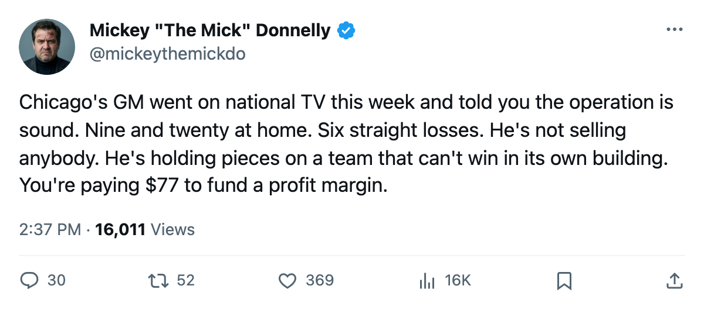
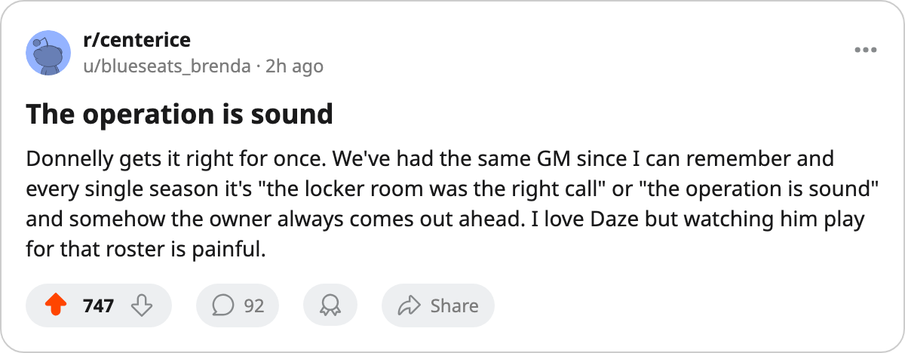

9 AND 20 AT HOME. SIX STRAIGHT LOSSES. "THE OPERATION IS SOUND."
Chicago's GM sat in front of a camera this week and told you the math works. The math says the owner banked $25.53 million.
 Mickey "The Mick" DonnellyColumnist, ex-goalie · The Penalty Box
Mickey "The Mick" DonnellyColumnist, ex-goalie · The Penalty Box
The piece
 Chicago Blackhawks are on a 6-game losing streak. Their home record is 9 and 20. Fifty-one points in 61 games. The window for making the playoffs shut sometime before Christmas, and the GM sat in front of a camera this week and told you the operation is sound.
Chicago Blackhawks are on a 6-game losing streak. Their home record is 9 and 20. Fifty-one points in 61 games. The window for making the playoffs shut sometime before Christmas, and the GM sat in front of a camera this week and told you the operation is sound.
Jason Hughes said it to The Tunnel's Jan Kowalczyk: "The operation is sound." He called the per-point figure efficient. The Bureau's Contract Ledger has Chicago at $0.77M per point, which is real. It is also what a team spends when it has stopped trying to win. The payroll is $39.27M, fifth-lowest in a 30-club league. The owner banked $25.53M. You are paying $77 a ticket to watch a business that works.
 Eric Daze87 has 99 points. Forty-three goals, 56 assists, 20.8 minutes a night. He is 29, having the best season of his life for a club that loses more at home than it wins.
Eric Daze87 has 99 points. Forty-three goals, 56 assists, 20.8 minutes a night. He is 29, having the best season of his life for a club that loses more at home than it wins.  Alexei Zhamnov84 is 34 with 84 points. The room is 18 and 31.
Alexei Zhamnov84 is 34 with 84 points. The room is 18 and 31.
Hughes called the locker room "the right call" and said the morale figures are not nothing. The Bureau's Morale Scale has Chicago at 90.6, twelfth-lowest in the league. Nobody in that room is happy enough to celebrate and nobody is angry enough to demand a change.
The GM is holding pieces on a team with 51 points
"I'm not sitting back waiting for somebody to call me with a fire-sale offer on a piece I want to keep," Hughes told the Tunnel. He is holding pieces. He has 51 points. The 8th team in the Western Conference,  St. Louis Blues, has 63. He is 12 back and not selling. So the roster just sits there, and
St. Louis Blues, has 63. He is 12 back and not selling. So the roster just sits there, and  Ryan VandenBussche67 collects 74 penalty minutes for 4 points on a -2 drop in the Development Index.
Ryan VandenBussche67 collects 74 penalty minutes for 4 points on a -2 drop in the Development Index.
The Index shows one Chicago riser: Igor Radulov80, up 5, 9 points in 61 games at age 22. That is not a core. That is a lottery ticket on a lottery team.
The attendance is 15,133. The ticket is $77. The profit is $25.53 million. Chicago Blackhawks will finish the season the way they have played most of it: losing at home, drawing enough bodies to keep the lights on, writing no checks in July because the arithmetic already makes the man who signs them rich.
Daze is 29. The operation is sound. The man in that building with the least power over it is the one paying the $77.

